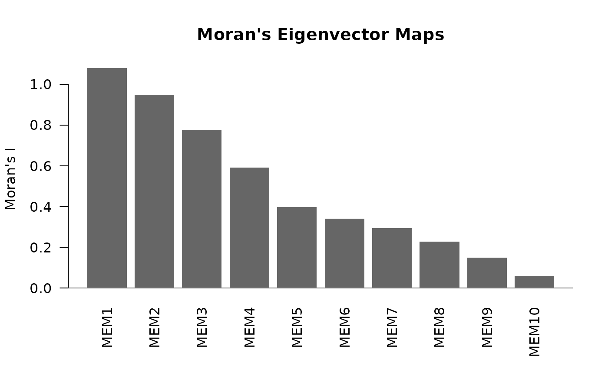
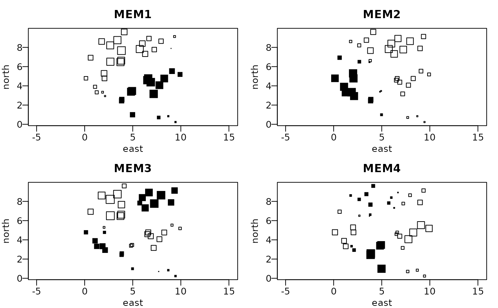

Turns the samples' positions into a set of uncorrelated spatial
variables, from broad-scale patterns to fine-scale ones: distance-based
Moran's eigenvector maps (dbMEM, formerly PCNM, principal coordinates of
neighbour matrices). Used as explanatory variables, in rda(),
dbrda(), varpart() or forward_select(), they model the spatial
structure of a community. Gives the same MEMs as adespatial::dbmem(),
computed in parallel C.
Usage
dbmem(
space,
data = NULL,
threshold = NULL,
autocor = "positive",
cpus = n_cpus()
)Arguments
- space
The samples' positions, as for
moran_i()but without spatial weights:Coordinates: a data frame, or a matrix that isn't square, with one row per sample and one numeric column per coordinate; or, with
data, the names of its coordinate columns. Distances between them are Euclidean. Project longitudes and latitudes first, or give great-circle distances as adist.Geographic distances: a
distobject.
The MEMs' row names are
space's row names (or adist's labels).- data
Optional sample metadata: a data frame with one row per sample, whose coordinate columns
spacenames. Default:NULL.- threshold
The truncation distance \(t\): samples at most \(t\) apart are neighbours.
NULL(the default) uses the longest edge of the minimum spanning tree of the distances, the smallest distance that leaves no sample, or group of samples, without a neighbour outside it. A smaller value is allowed, with a warning, but leaves groups of samples unconnected to the rest.- autocor
Which MEMs to return, by the sign of their spatial autocorrelation (Moran's I), as adespatial's
MEM.autocor:'positive': positive autocorrelation (the default), the MEMs usually used to model spatial structure;'negative': negative autocorrelation;'non-null': either;'all': all \(n - 1\), including any whose eigenvalue is 0.
- cpus
How many parallel processing threads should be used. The default,
n_cpus(), is the CPU cores this R process may use, within any limits set on it. Results are the same for anycpus.
Value
A numeric matrix of class ecodive_dbmem, with one row per
sample and one column per MEM, named MEM1, MEM2, ..., in order of
decreasing eigenvalue (from broad-scale positive autocorrelation to
fine-scale negative). Each column has mean 0 and sum of squares
\(n\), and the columns are orthogonal. Its attributes are:
values: The eigenvalues, as adespatial gives them: those of the doubly centred spatial weights \(W\), divided by \(n\).moran_i: Each MEM's Moran's I, with the weights \(W\) as they are (moran_i(x, style = 'none')): \(n^2 \lambda / S_0\), for eigenvalue \(\lambda\) (values) and \(S_0\) the sum of the weights.threshold: The truncation distance \(t\).method:'dbmem'.
The matrix can be given as is wherever a table of explanatory variables
is taken (or converted with as.data.frame()). Columns taken with [
are a plain matrix, without the attributes.
Details
Method
dbMEM (Borcard & Legendre 2002; Dray et al. 2006) describes the spatial arrangement of the samples at every scale the sampling can resolve:
Samples at most \(t\) apart are neighbours. Each pair of neighbours has spatial weight \(w_{ij} = 1 - (d_{ij} / 4t)^2\), and every other pair 0.
The weights matrix \(W\) is doubly centred (its rows and columns made to sum to 0), and its eigenvectors are the MEMs: orthogonal variables, each with Moran's I proportional to its eigenvalue. Those with large positive eigenvalues vary smoothly across the study area (neighbours have similar values); those with large negative ones alternate between neighbours.
This is principal coordinates analysis (pcoa()) of the truncated
distances (distances larger than \(t\) replaced by \(4t\)), the
original PCNM method, whose eigenvectors are the same: the PCoA
eigenvalues are \(8 t^2 (n \lambda + 1)\) for each eigenvalue
\(\lambda\) in values. Keeping the MEMs with positive eigenvalues
keeps those with positive Moran's I, which PCNM's positive PCoA
eigenvalues did not (Dray et al. 2006).
Eigenvalues within \(\sqrt{\epsilon}\) (about \(1.5 \times 10^{-8}\))
of the largest one in absolute value are taken to be 0: such MEMs are
neither positive nor negative, and are returned only with autocor = 'all', with values of exactly 0. Pairs whose distance exceeds \(t\)
by less than one part in a million (rounding in computed distances) are
neighbours too.
The MEMs are found only up to sign: each column is made positive where its largest absolute value is. MEMs whose eigenvalues are equal (as on a regular grid) are any orthogonal basis of their shared space, as in any eigendecomposition.
Samples at the same place (distance 0) are allowed. A sample with no
neighbours (possible only with a threshold below the default) gives a
warning; it still has values in every MEM.
Speed, memory, and reproducibility
The eigenvectors of an \(n \times n\) matrix take \(O(n^3)\) time and
\(O(n^2)\) memory, about \(16 n^2\) bytes (64 MB at \(n = 2000\)),
plus 16 bytes for each pair of neighbours.
The work is shared among cpus threads, by a Householder reduction to
tridiagonal form and the QL algorithm, in C, without the BLAS. Results
are bit-identical for any cpus.
Differences from adespatial
adespatial::dbmem() returns a data frame (of class orthobasisSp)
with the same columns, up to sign, and the same values. It stores the
spatial weights (listw) instead of each MEM's Moran's I, which is here
attribute moran_i. Its MEM.autocor is autocor, thresh is
threshold, and xyORdist is space; it has no data.
Same names in other packages
dbmem() masks adespatial::dbmem() when both packages are attached:
call either as ecodive::dbmem() or adespatial::dbmem().
References
Borcard, D., & Legendre, P. (2002). All-scale spatial analysis of ecological data by means of principal coordinates of neighbour matrices. Ecological Modelling, 153(1-2), 51-68. doi:10.1016/S0304-3800(01)00501-4
Dray, S., Legendre, P., & Peres-Neto, P. R. (2006). Spatial modelling: a comprehensive framework for principal coordinate analysis of neighbour matrices (PCNM). Ecological Modelling, 196(3-4), 483-493. doi:10.1016/j.ecolmodel.2006.02.015
See also
moran_i(), which tests a variable for spatial
autocorrelation; forward_select() and varpart(), which use MEMs as
explanatory variables; plot.ecodive_dbmem().
Examples
# 40 sites, with taxa that follow the east-west gradient and pH.
set.seed(1)
sites <- data.frame(
row.names = paste0('S', 1:40),
east = runif(40, 0, 10),
north = runif(40, 0, 10),
ph = runif(40, 5, 8) )
counts <- matrix(rpois(40 * 12, 3), 40, 12)
counts[, 1:4] <- counts[, 1:4] + round(2 * sites$east)
counts[, 5:8] <- counts[, 5:8] + round(3 * (sites$ph - 5))
mem <- dbmem(c('east', 'north'), sites)
mem
#> # A matrix: 40 samples × 10 MEMs
#> # Moran's Eigenvector Maps
#> # Threshold: 2.51
#> MEM1 MEM2 MEM3 MEM4 MEM5 MEM6 MEM7 MEM8 MEM9 MEM10
#> S1 -1.23 -0.3 -1.84 0.371 0.457 0.739 -0.21 -0.937 0.859 -0.225
#> S2 -1.28 0.0915 -1.29 0.0456 -0.659 -0.189 0.0443 2.65 -0.907 0.355
#> S3 -1.26 -1.46 0.625 0.354 -1.31 -1.1 0.74 0.698 -0.241 0.921
#> S4 0.809 -0.412 -0.132 -1.66 0.401 1.9 2.03 0.0792 -0.567 1.02
#> S5 -0.808 1.92 -0.0956 -0.812 -0.599 -0.118 -0.992 0.841 -1.27 0.713
#> S6 -0.0021 -0.605 1.1 -0.726 1.15 2.42 -0.586 1.35 1.69 0.471
#> S7 0.11 -0.047 0.147 -0.158 2.86 -1.73 0.405 0.338 -0.3 0.151
#> S8 1.67 -0.432 -0.718 -0.245 -0.994 -0.711 -1.12 0.0986 0.593 -0.483
#> S9 -0.69 -1.26 1.39 0.0979 -0.844 -0.804 -0.107 -0.819 -1.5 -0.911
#> S10 -0.588 0.533 -0.78 -0.378 0.88 1.04 -2.08 -2.56 -1.42 0.879
#> # … 30 more samples
#> # Use print(x, n = ...) to see more samples
#> # Attributes: values, moran_i, threshold, method
plot(mem)

plot(mem, sites[, c('east', 'north')])

# The MEMs that explain the community (a formula of them), then the
# variation explained by pH and by space.
fs <- forward_select(counts, data = mem, norm = 'hellinger')
fs
#> Forward selection by RDA (hellinger): 40 samples
#> Permutations: 999 (free)
#> Global model: 10 df, adj. R-squared 0.1938, F = 1.937, p = 0.002
#>
#> variable df r_squared r_squared_cum adj_r_squared adj_r_squared_cum F
#> 1 MEM2 1 0.1558 0.1558 0.1335 0.1335 7.011
#> 2 MEM1 1 0.0559 0.2117 0.0355 0.1691 2.625
#> p_value
#> 1 0.001
#> 2 0.023
#>
#> Stopped: not significant.
#> Next best: MEM8 (adj. R-squared 0.1916, F = 2.031, p = 0.072)
#> Selected: ~MEM2 + MEM1
varpart(
counts, ph = ~ ph, space = attr(fs, 'selected'),
data = cbind(sites, mem), norm = 'hellinger' )
#> Variation partitioning by RDA (hellinger): 40 samples, 2 sets
#> Total inertia: 1.81686 (sum of squares; variance 0.0465861)
#>
#> ph ~ph 1 df, adj. R-squared 0.0882
#> space attr(fs, "selected") 2 df, adj. R-squared 0.1691
#> All 3 df, adj. R-squared 0.2639
#>
#> +- ph ----------------------+
#> | +-----------+---------------+
#> | [a] | [c] | |
#> | 0.0948 | -0.0067 | [b] |
#> | | | 0.1757 |
#> +---------------+-----------+ |
#> +- space -------------------+
#> Residuals [d] 0.7361
#>
#> sets df r_squared adj_r_squared testable
#> [a] ph 1 0.1089 0.0948 TRUE
#> [b] space 2 0.2090 0.1757 TRUE
#> [c] ph & space NA 0.0027 -0.0067 FALSE
#> [d] residuals NA 0.6795 0.7361 FALSE